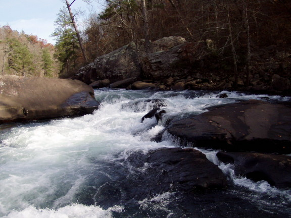
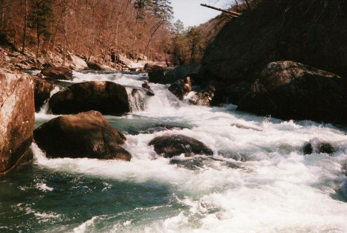
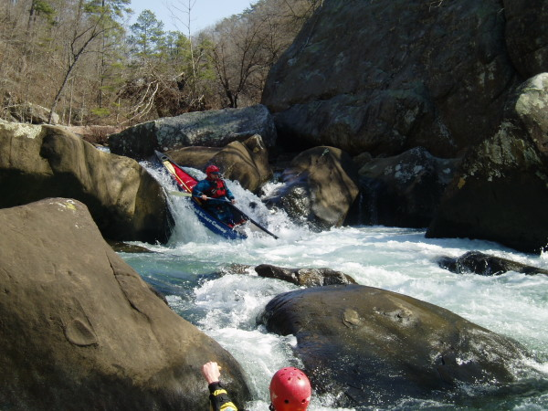
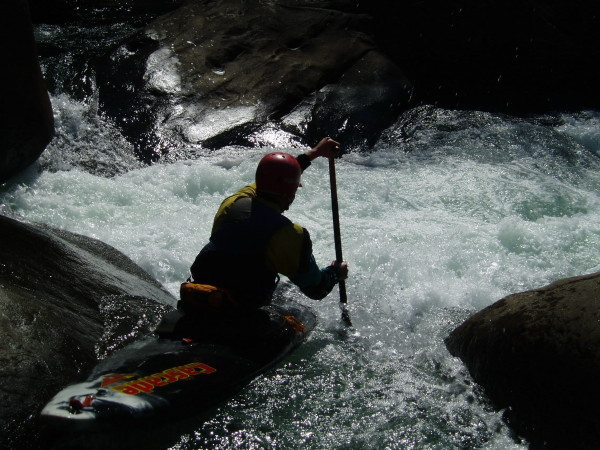
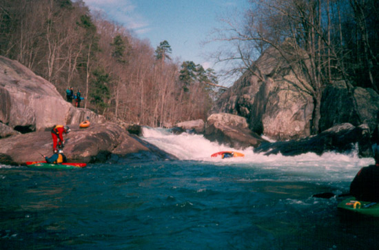
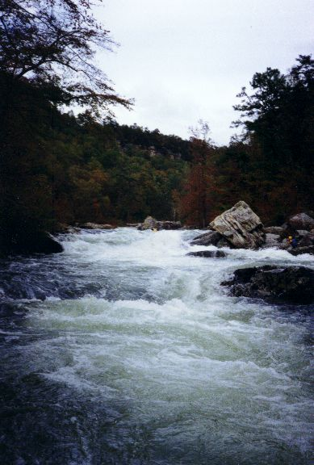

Little River Canyon Upper 2
There are many pics of the Upper 2, including roadblock, on the American Whitewater site. We need to get
shots of the other rapids below Humpty Dumpty someday. Hit feedback if you can fill this need.

The first significant upper 2 drop, screaming right turn, at a very low (hiking)
water level.
(photo courtesy Jed Dugger)

A good angle on the first two drops of Humpty-Dumpty. The big eddy on the bottom
left of this picture is where most people set up for the last drop.
(photo courtesy Sloan Bryan)

Chris Parker does the open boat thing on the main drop of Humpty
Dumpty at 0"
(Curt Ruffing Photo)

Mark D' runs the right side slide of the last drop of Humpty
Dumpty at about 0"
(Curt Ruffing Photo)

An unknown kayaker struggles to extricate him or
herself from the hole at the bottom of Humpty-Dumpty. Many of us can say "been there, done that".
Unfortunately.

Jim Dowdy is that little speck in Deep Throat at 12"